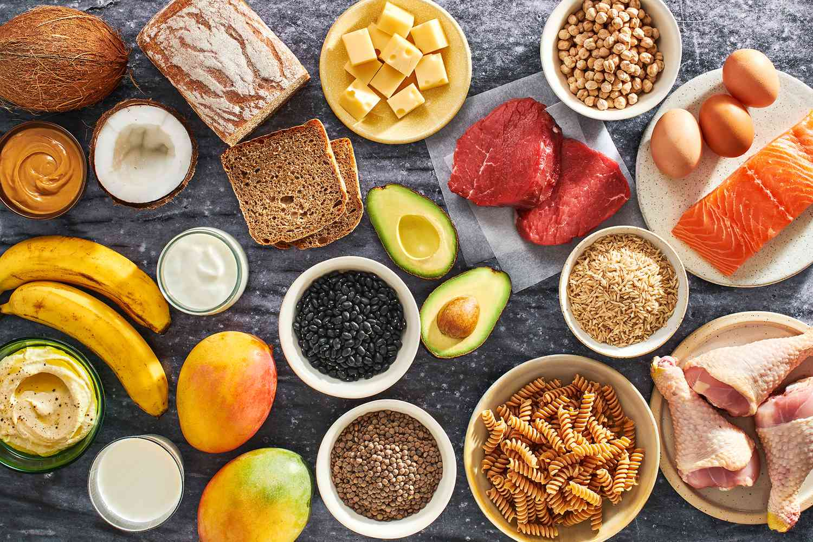

Tips for Gaining BMI

1. Consume a balanced diet with a slight caloric surplus.
2. Include a mix of carbohydrates, proteins, and healthy fats in your meals.
3. Engage in regular strength training exercises to build muscle mass.
4. Monitor your BMI regularly and adjust your diet and exercise accordingly.
Tips for Losing BMI

1. Create a calorie deficit by consuming fewer calories than you burn.
2. Focus on a balanced diet with an emphasis on nutrient-dense foods.
3. Include regular aerobic exercises to help burn excess fat.
4. Monitor your BMI regularly and make adjustments to your lifestyle as needed.
Tips for Maintaining BMI

1. Balance your caloric intake with your energy expenditure.
2. Include a variety of whole foods in your diet for optimal nutrition.
3. Engage in a combination of aerobic and strength training exercises.
4. Regularly assess your BMI and make adjustments to maintain a healthy range.